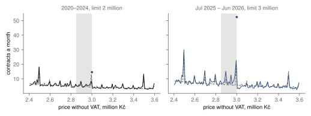
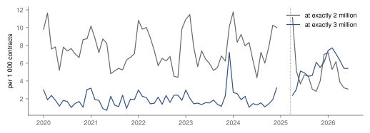
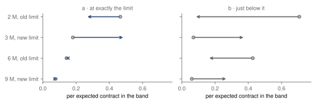

Research · public spending · Czech contracts, 2020–2026
Priced at the limit: Czech public contracts after the small-contract threshold rose in 2025
More Czech contracts were priced at exactly the new small-contract limits after April 2025 than round numbers explain: about 16 more per 100 expected contracts (95 % CI 6 to 26), supported.
- at exactly the new limits, per expected contract
- +0.16 95 % CI 0.06 to 0.26, t with 6 degrees of freedom · supported · 6 663 authorities
- of which at 3 million (supplies and services)
- +0.30 95 % CI 0.21 to 0.43, bootstrap percentile, not calibrated, unregistered · 9 million (works): 0.00
- contracts at exactly the old limits, fall
- +0.11 95 % CI 0.00 to 0.22 · underpowered: smallest detectable 0.28, bound 0.25
- contracts analysed, 0.5–13.5 million Kč
- 445 915 + 106 502 administrative count · 2020–2024 / July 2025 – June 2026
Overwhelmed? Here's the short version
- A contract at or below the small-scale limit can be awarded without a tender. On 3 April 2025 the limit rose from 2 to 3 million Kč for supplies and services and from 6 to 9 million for works. In the public register of contracts, the share priced at exactly 3 million rose after the change and the share at exactly 2 million fell; the fall is descriptive, because the registered test of the old limits was underpowered.
- Almost all of the pooled estimate comes from 3 million (descriptive, not a registered test); at 9 million no change was detectable.
- The registered test holds across most specifications, but 2 of sixteen checks lose it.
- Under five assumptions about the counterfactual and about nothing else changing, the pattern is consistent with recorded prices responding to the limit. The data fit a cost estimate near the limit, a narrower scope, or a budget the bidder matched; prices alone cannot tell which. Nothing here is about what the contracts cost or who won them, and the smallest municipalities are not in the register.
Czech public bodies may award a small-scale contract without a tender, as long as they treat suppliers fairly and transparently. Above the limit they must run a procurement procedure, with publication, deadlines and the chance for any supplier to bid. On 3 April 2025 an amendment to the procurement act raised the limit for supplies and services from 2 to 3 million Kč and for works from 6 to 9 million Kč, both without VAT1. The act counts a contract whose value is equal to the limit as small-scale2, so a price of exactly 3 000 000 Kč needs no tender after the change and needed one before it.
Contracts may cluster just under such a limit. Palguta and Pertold found such clustering in Czech procurement when these limits were first introduced3, and studies of other countries ask what discretion below a limit does to competition and prices456. Reading such clusters is the method of bunching estimation789: the number of cases near a threshold is compared with what a smooth distribution would put there. A single limit leaves one doubt. The old limits were round millions, and contract prices cluster at round numbers anyway. The 2025 change moves the limit to another round million, so the question here is whether contracts priced at the limit moved with it, beyond what happened at round millions that carry no legal meaning. The change in the law provides the identifying variation; the comparison is the same price before and after.
Data
Every Czech public body except the smallest municipalities must publish its contracts above 50 000 Kč without VAT in the public register of contracts, the Registr smluv, or the contract does not take effect10. The register's metadata are open data, published as one file per month11. The study read the 81 monthly files from January 2020 to September 2026, 7 025 188 records in all. After keeping the latest valid version of each contract, those in Czech crowns with a price, and the dates of the two periods, 5 857 800 remained; 855 187 were left out because their subject marks them as grants, leases, sales or similar agreements that are not purchases, by a list of word stems fixed before the data were read, and 6 401 had no publishing body. 26 483 records that repeat another one's parties, date, contract number and price were flagged and kept out.
The register records the price in the contract, which for a contract awarded without a tender is the value the law uses12; for a contract from a tender it is the winning bid, usually below the estimate the tender started from. The price without VAT, the one the limit applies to, was given for 67.7 % of records before the change and 71.3 % after it; records with only a price including VAT are added in a check. The analysis covers prices between 0.5 and 13.5 million Kč: 445 915 contracts concluded in 2020–2024 and 106 502 concluded between July 2025 and June 2026, from 6 663 public bodies. The quarter after the change is left out, because tenders started under the old limit were finished under it and internal rules took months to follow.
How this was done
For each limit and each period, prices are counted in bins of 10 000 Kč. A smooth curve, with extra terms for the pull of multiples of 50 000, 100 000 and 500 000 Kč, is fitted to the bins away from the limits, from other round millions and from nearby legal thresholds such as the EU tender limits13. This is the counterfactual: what the curve would show without a limit, fitted to prices away from it. It gives the number of contracts expected in the band from 5 % below a limit up to it, and two quantities are measured against that number. The first, a, is how many contracts sit exactly on the limit; the second, b, is how many sit just under it, beyond the curve. Both are expressed per expected contract in the band, so 0.16 means about 16 more contracts for every 100 the curve expects there. The registered test rests on a: the law makes the limit itself small-scale, so a contract priced exactly at the limit needs no tender, while prices from tenders that came in just under the limit spread across the band and land in b.
A price of exactly 3 million was a round number before it became the limit. The comparison therefore takes each limit against itself, before and after the change, and scales its round-number pull by how the pull changed at seven round millions with no legal meaning (4, 5, 7, 8, 10, 12 and 13 million). The registered estimate for the new limits, D*new, is the average over 3 and 9 million of the mass after the change minus the scaled mass before it; for the old limits, D*old, it is the scaled mass before minus the mass after, at 2 and 6 million. Each round million is also treated in turn as if it were a new limit. These placebos show how large an estimate is when nothing legal changed, so the real estimate is judged against them: their average corrects it for any bias of the scaling, and their spread widens its interval. Intervals come from resampling whole public bodies (999 draws) and use t quantiles with six degrees of freedom, which are wider than a normal interval because only seven round millions inform the spread.
The readings were fixed in advance. A hypothesis is underpowered if the effect it could detect, computed from the number of contracts before any estimate, exceeds 0.25; inconclusive if the validity check fails; not supported if its 90 % interval lies inside ±0.15; supported if its 95 % interval lies above zero; and inconclusive otherwise. The validity check fails if the placebos show a bias whose 90 % interval lies wholly outside ±0.15, or if the round-number scaling at low and at high millions differs with a 90 % interval wholly outside ±0.5.
Assumptions and method in detail
The estimate is consistent with a response of recorded prices to the limit only under five assumptions. A1: without the limit, prices in each band would follow the fitted smooth curve with its sub-million rounding. A2: a change in the taste for round millions scales the mass at every round million by the same factor. A3: nothing else changed at these prices on 3 April 2025; the same amendment moved the threshold for publishing contracts on a body's own website from 500 000 to 1 million Kč, which does not apply to contracts in the register, and from May 2025 recipients of EU funds that are not public bodies have a 6 million limit of their own14. A4: the set of bodies that publish in the register did not change at the same time; the register's act was last amended with effect from January 2025. A5: the way prices are typed into the register, including prices with VAT entered as without it, did not change differently at the limits.
Before the data were read, a simulation calibrated on counts far from every threshold set the effect each hypothesis could detect; it was rerun with the real number of contracts before any estimate, which fixed the label of the old-limit test as underpowered. The scaling factor is a ratio because enough contracts sit at exactly a control million; an additive version is one of the checks. Bins are 10 000 Kč wide; the polynomial has degree 7 in the logarithm of price. Every published price bin holds at least 30 contracts; the page is not built if one would hold fewer. Intervals for the registered estimates are t intervals around the placebo-corrected value; intervals for single limits, for b and for the robustness rows other than the registered estimate are bootstrap percentiles and are not corrected. The full design, with the simulations and the reasons for each choice, is in the repository.
The tests
| Question | Registered rule | Result | Label |
|---|---|---|---|
| H1 · more contracts at exactly the new limits (3 and 9 million) | supported if the 95 % CI lies above 0; not supported if the 90 % CI lies within ±0.15 | +0.16 95 % CI 0.06 to 0.26 · 90 % CI 0.08 to 0.24 · t(6), placebo-corrected · detectable effect 0.22 | supported |
| H2 · fewer at exactly the old limits (2 and 6 million) | the same, unless the detectable effect exceeds 0.25 | +0.11 95 % CI 0.00 to 0.22 · t(6), placebo-corrected · detectable effect 0.28 | underpowered |
| Validity check · placebo bias and stability of the round-number scaling | fails if the bias has a 90 % CI wholly outside ±0.15, or the scaling difference a 90 % CI wholly outside ±0.5 | bias −0.01 scaling 4–5 M 1.08, 10–13 M 0.80; difference 0.28, 90 % CI 0.05 to 0.51, 95 % CI 0.01 to 0.54 | passed |
| b · contracts just below the limits | descriptive, no label | new +0.31, old +0.40 95 % bootstrap percentile CI 0.22 to 0.41; 0.25 to 0.54 | descriptive |
Contracts priced at exactly the new limits
At the new limits, the mass of contracts priced exactly at the limit rose by 0.16 per expected contract in the band, beyond what the change at round millions predicts (95 % CI 0.06 to 0.26), so by the rule set in advance the hypothesis is supported. Pooled over both limits, the figure combines two different responses. At 3 million, the limit for supplies and services, the increase is 0.30 (0.21 to 0.43); at 9 million, the limit for works, it is 0.00 (−0.03 to 0.04). These single-limit figures are descriptive: they were not registered as tests, and their intervals are bootstrap percentiles without the placebo correction. Before the change, 0.18 contracts were priced at exactly 3 million for every one expected in the band below it; after the change, 0.49. At 9 million the figure stayed at 0.08.
Fig. 1 shows the prices around 3 million. In 2020–2024 about 15 contracts a month were priced at exactly 3 000 000 Kč, when 3 million was only a round number. From July 2025, about 52 a month were. The bins just below 3 million sit further above the fitted curve than before the change, when their excess was 0.07 per expected contract.
Contracts priced at exactly 3 million averaged about 15 a month in 2020–2024 and about 52 a month from July 2025.

By month of conclusion, contracts priced at exactly 3 million made up 1.9 of every 1 000 contracts in the range in 2020–2024 on average and 5.9 from July 2025; at exactly 2 million, 7.6 and 4.6 (fig. 2). Single months vary widely: before the change, one month reached 7.2 at 3 million. The monthly series is descriptive; the registered test compares whole periods.
The share of contracts priced at exactly 3 million rises after April 2025; the share at exactly 2 million falls.

The old limits, and contracts just below each limit
At the old limits, the mass priced exactly at the limit fell by 0.11 (95 % CI 0.00 to 0.22), driven by 2 million, where it went from 0.47 to 0.26 per expected contract; at 6 million it stayed at 0.14. With the number of contracts available, this test could detect only an effect of 0.28 or more, above the bound of 0.25 set in advance, so the hypothesis is underpowered and these numbers are a description. The old limits may also keep some pull of their own: the model directive the ministry offers municipalities uses 2 and 6 million as bounds between categories of small contracts15.
Just below the limits, in b, the band below the new limits filled and the band below the old ones emptied: +0.31 (0.22 to 0.41) at the new limits and +0.40 (0.25 to 0.54) at the old ones, percentile intervals (fig. 3). Unlike a, b moved at the works limit too, by 0.27 (0.15 to 0.40). A contract estimated just above the limit goes to a tender, and a winning bid below the estimate can land in the band under it; when the limit moves, that band moves with it. b carries no label for this reason.
Contracts priced exactly at the limit (a) rose at 3 million and fell at 2 million; the excess just below each limit (b) changed at all four limits.

Robustness
Each check changes one choice and recomputes the calibrated estimate for the new limits. By the rule set in advance, the result would be called sensitive if three or more of sixteen checks changed its label; 2 did. Narrowing the band to 2.5 % below the limit raises the estimate, and widening it to 10 % lowers it to 0.08, which reads as "not supported": a mass at a single price weighs less against a wider band. Keeping only records whose publisher marked itself as the payer, 26 % of kept records, gives 0.09 (−0.02 to 0.19), inconclusive. The other checks stay between 0.12 and 0.27, all supported.
| Check | D*new, 95 % CI (t(6), placebo-corrected) | Label |
|---|---|---|
| registered estimate | +0.16 0.06 to 0.26 | supported |
| band 2.5 % below the limit | +0.27 0.08 to 0.46 | supported |
| band 10 % below the limit | +0.08 0.03 to 0.13 | not supported |
| curve of degree 5 / 9 | +0.16 / +0.15 0.08 to 0.25; 0.04 to 0.25 | supported / supported |
| additive round-number scaling | +0.16 0.06 to 0.26 | supported |
| nearest round millions only | +0.16 0.06 to 0.26 | supported |
| prices with VAT typed as without it, excluded from the fit | +0.16 0.06 to 0.26 | supported |
| records with only a price with VAT added | +0.17 0.08 to 0.26 | supported |
| records with equal prices with and without VAT dropped | +0.17 0.05 to 0.28 | supported |
| duplicates kept | +0.16 0.06 to 0.26 | supported |
| after period from 3 April / 1 October 2025 | +0.14 / +0.18 0.07 to 0.22; 0.10 to 0.25 | supported / supported |
| before period 2022–2024 | +0.16 0.07 to 0.25 | supported |
| largest 1 % of bodies dropped | +0.18 0.08 to 0.29 | supported |
| linked records / orders / framework and periodic prices dropped | +0.19 / +0.19 / +0.12 0.10 to 0.28; 0.08 to 0.29; 0.03 to 0.21 | supported / supported / supported |
| publisher marked as payer only | +0.09 −0.02 to 0.19 | inconclusive |
| placebo: a fake change on 1 January 2023, within 2020–2024 (not counted among the 16) | +0.01 −0.08 to 0.10, calibrated 95 % CI, t(6) | not supported |
The fake change in 2023 passes its registered reading, a raw 90 % percentile interval inside ±0.15 (−0.03 to 0.03), but one of the seven round millions does move when treated as a limit: at 10 million the placebo estimate is −0.07 (90 % CI −0.15 to −0.00), inside the bound but not zero. The round-number scaling is 1.08 at 4–5 million and 0.80 at 10–13 million. The difference, 0.28, passed the validity check narrowly: its 90 % interval ends at 0.51, just inside the bound of 0.5 (95 % CI 0.01 to 0.54), so the assumption that rounding changed by one factor everywhere holds only roughly. The check that splits contracts by type, using word stems in their subjects, fails its rule: among contracts marked as works, the estimate at 3 million is −0.00, as expected, but its 90 % interval runs from −0.15 to 0.09, its lower end just beyond the bound of −0.15; among supplies and services, the estimate at 9 million lies within −0.04 to 0.03. The split is too imprecise to confirm that the response comes from supplies and services alone. The same check with the classification of Hlídač státu was attempted on 13 October 2026, after the results, and could not be run as registered: the classification was empty in all returned records, and half of the sampled contracts were not found. It was not run.
What this means
Measured: after the small-contract limits rose, more Czech public contracts were priced at exactly the new limits than the change in round-number pricing explains, 0.16 contracts per expected contract in the band, about 16 per 100 (95 % CI 0.06 to 0.26, placebo-corrected, t with six degrees of freedom). This pooled figure is the registered result. Where it comes from is descriptive, unregistered, and its intervals are not calibrated: almost all of it is at the 3 million limit for supplies and services, and none is detectable at the 9 million limit for works. Whether the old limits lost their pull could not be tested precisely.
Inferred, under assumptions A1–A5: the pattern is consistent with recorded prices responding to the legal limit. The data fit a cost estimate near the limit, a narrower scope, or a budget the bidder matched; prices alone cannot tell which, and the study passes no judgement on them.
What this does not show
The study measures prices in the register, not the estimates authorities set before a tender, so a contract priced at the limit after a tender cannot be told from one awarded directly. It does not show whether contracts at the limit cost more, how many suppliers competed, or who won them. The register exempts municipalities without extended powers and the bodies they own10, so a large part of small-scale purchasing, in small municipalities, is not in the data. A purchase divided into several contracts would place each part far below the limit, outside these bands. Twelve months after the change is a short period, and some bodies adjusted their internal rules months later15. The pooled estimate dilutes each limit by the other type of contract, and the split by type rests on word stems.
Reproduction
Every number on this page is filled in from assets/procurement/results.json and the screening, power and manifest files by a script. From the repository root:
tools/procurement/collect.py: the monthly dumps and their hashes.prepare.py --totals-to-power: the screening, and the detectable effects from the real counts.estimate.py: the registered estimates and checks.article.py: the figures and this page.
From the next run on, estimate.py also records the commit it ran on (git rev-parse HEAD) and whether the working tree was clean; the published run predates this addition and was not repeated. The design is docs/research/procurement-bunching-design.md.
References
- Zákon č. 69/2025 Sb., part three, amending the public procurement act; promulgated 19 March 2025, in effect from 3 April 2025. zakonyprolidi.cz/cs/2025-69. Accessed 12 October 2026.
- Zákon č. 134/2016 Sb., o zadávání veřejných zakázek, §§ 16 and 27, consolidated text. zakonyprolidi.cz/cs/2016-134. Accessed 12 October 2026.
- Palguta, J., Pertold, F. (2017). Manipulation of procurement contracts: evidence from the introduction of discretionary thresholds. American Economic Journal: Economic Policy 9(2), 293–315. doi:10.1257/pol.20150511. Accessed 12 October 2026.
- Coviello, D., Guglielmo, A., Spagnolo, G. (2018). The effect of discretion on procurement performance. Management Science 64(2), 715–738. doi:10.1287/mnsc.2016.2628. Accessed 12 October 2026.
- Szucs, F. (2024). Discretion and favoritism in public procurement. Journal of the European Economic Association 22(1), 117–160. doi:10.1093/jeea/jvad017. Accessed 12 October 2026.
- Baránek, B., Titl, V. (2024). The cost of favoritism in public procurement. Journal of Law and Economics 67(2), 445–477. doi:10.1086/727793. Accessed 12 October 2026.
- Kleven, H. J. (2016). Bunching. Annual Review of Economics 8, 435–464. doi:10.1146/annurev-economics-080315-015234. Accessed 12 October 2026.
- Chetty, R., Friedman, J. N., Olsen, T., Pistaferri, L. (2011). Adjustment costs, firm responses, and micro vs. macro labor supply elasticities: evidence from Danish tax records. Quarterly Journal of Economics 126(2), 749–804. doi:10.1093/qje/qjr013. Accessed 12 October 2026.
- Kleven, H. J., Waseem, M. (2013). Using notches to uncover optimization frictions and structural elasticities: theory and evidence from Pakistan. Quarterly Journal of Economics 128(2), 669–723. doi:10.1093/qje/qjt004. Accessed 12 October 2026.
- Zákon č. 340/2015 Sb., o registru smluv, § 3(2), consolidated version from 1 January 2025. zakonyprolidi.cz/cs/2015-340. Accessed 12 October 2026.
- Digitální a informační agentura. Registr smluv, open data: monthly dumps and terms of use. data.smlouvy.gov.cz; smlouvy.gov.cz/stranka/otevrena-data. Snapshot 12 October 2026, hashes in the manifest.
- Ministerstvo pro místní rozvoj (2025). Ke zvýšení limitů pro veřejné zakázky malého rozsahu dojde od 3. dubna 2025. Portál o veřejných zakázkách, 20 March 2025. portal-vz.cz. Accessed 12 October 2026.
- Nařízení vlády č. 172/2016 Sb., o stanovení finančních limitů a částek pro účely zákona o zadávání veřejných zakázek, with amendments to 541/2025 Sb. zakonyprolidi.cz/cs/2016-172. Accessed 12 October 2026.
- Centrum pro regionální rozvoj ČR (2025). Informace Centra ke zvýšení limitů pro VZMR od 3. 4. 2025 a ke zvýšení limitu pro přímý nákup od 1. 5. 2025. crr.gov.cz. Accessed 12 October 2026.
- Ministerstvo pro místní rozvoj (2025). Vzorová vnitřní směrnice obce pro zadávání veřejných zakázek malého rozsahu, version 1.0, December 2025; and Liberecký kraj, news item of 4 June 2025 on the amended regional directive. portal-vz.cz; kraj-lbc.cz. Accessed 12 October 2026.